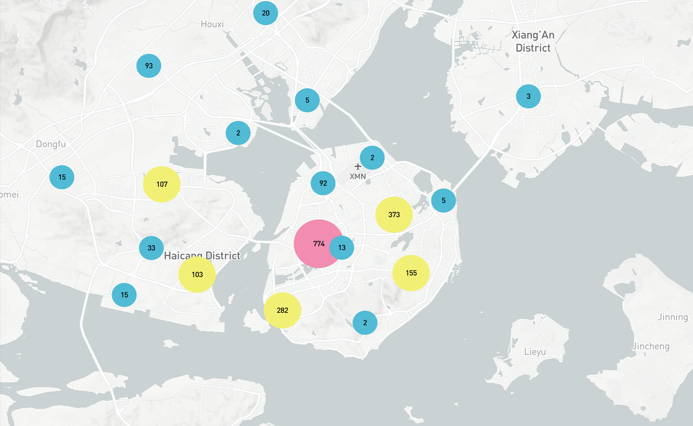
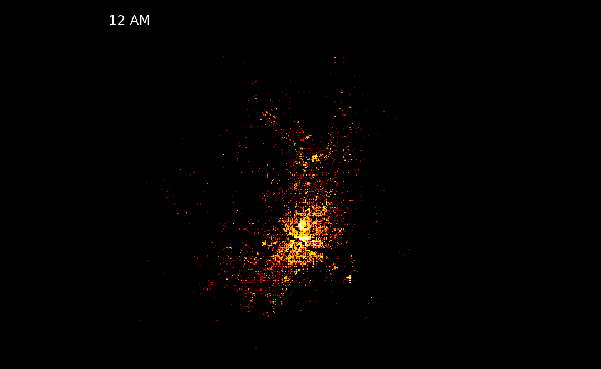
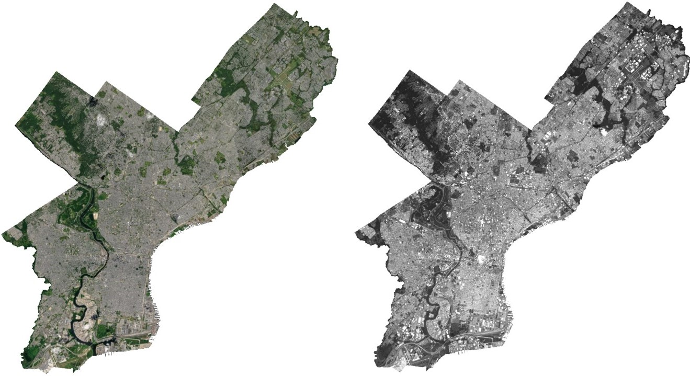
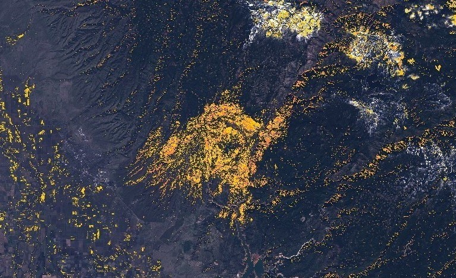
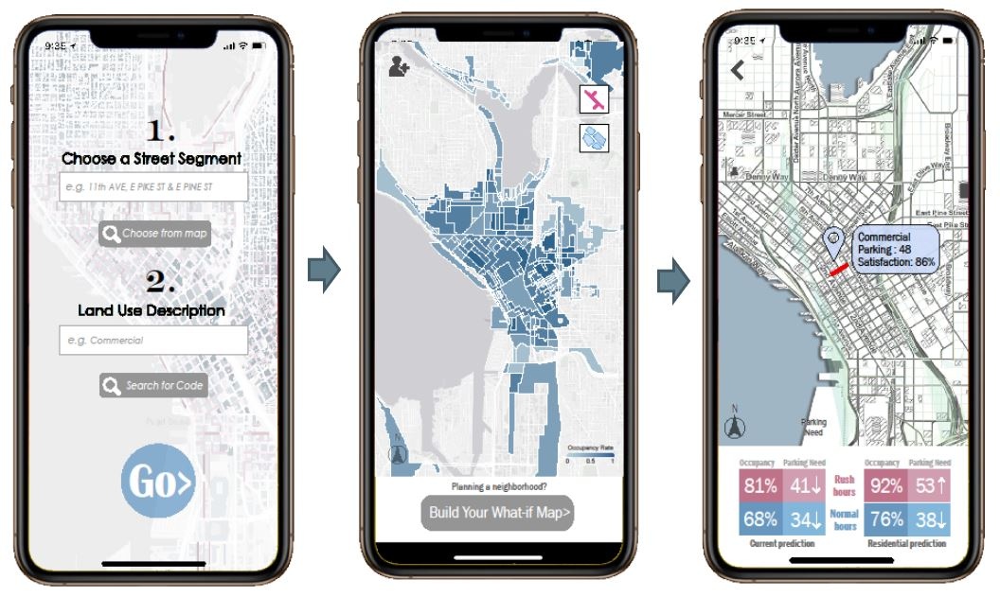

Semantic Analysis and Web-mapping
This is a demo of the back-end of a mobile app that geo-record user comments regarding to city issues in Xiamen, China. The function of this website is to map the location of user comments, find out the hot spots, and extract top keywords based on natural language processing.

Ride-share in Austin
This report examined the ride-hailing service usage among elder people in the city of Austin based on demographic information and cluster analysis.

Cool-roof and Urban Heat Island Effect
To examine whether the cool-roof law is effective in Philadelphia, this report will build predictive models to examine the relationship between cool-roof and land surface temperature using remote sensing data.

Green Land Cover Change in Paradise, CA
Using Javascript and Sentinel Playground to generate maps that shows green land cover change after the Campfire devasted the town of Paradise.

Sew-kill - Smart Water Monitoring and Purification Installation
A arduiano based installation that can detect the change of water quality and automatically turn on/off the water purification system according to the water quality index.

Seattle Parking Factfinder
A mobile app that shows the predicted occupancy rate of parking lots in the City of Seattle.